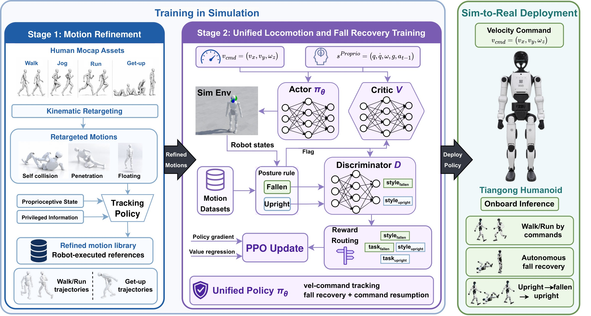

ReLoco
Unified Humanoid Locomotion and Fall Recovery via Behavior-Conditioned Motion Priors
One proprioceptive actor. Walk, run, recover, and resume commanded motion.
Interactive demo
Take the policy for a walk
Command the robot in MuJoCo, apply a disturbance, and let the same actor attempt recovery.
Tips:
1Use 8/2 to change forward speed, and keep commands small to test stable standing.
2Use 4/6 for lateral velocity and 7/9 for yaw commands.
3If the robot loses balance or falls, let the recovery policy try to get back up; press 0 or use Reset only when you want to restart.
Abstract
Recover, then continue the task
Humanoid robots must recover from falls and resume commanded motion to sustain locomotion. Learning this behavior in one policy requires references suited to the robot and supervision that accommodates both upright movement and ground-contact recovery. We present ReLoco, a training framework that combines simulation-refined motion references with behavior-conditioned adversarial motion priors. A tracking policy refines retargeted human motions into robot-executed examples. During policy learning, posture selects the expert pool and conditions a shared discriminator with two behavior-specific outputs. Task rewards and shared regularization support command tracking and recovery, while temporary assistance facilitates exploration. Deployment on the 64.5-kg Tiangong 3.0 humanoid demonstrates walking, running, get-up, and locomotion resumption after falls using one proprioceptive actor, without controller switching or on-robot policy fine-tuning.
Refine the references
An offline tracking policy executes retargeted human motions in simulation to build locomotion and get-up reference libraries.
Condition the supervision
Robot posture selects the expert pool and one of two outputs from a shared discriminator. Task rewards and shared penalties train the same actor.
Deploy one actor
The proprioceptive policy uses velocity commands to walk, run, get up, and resume locomotion. The discriminator and supervision router are used only in training.
Method
Better references, posture-appropriate supervision
ReLoco (Recovery and Locomotion) refines retargeted human motions in simulation to form locomotion and get-up reference sets. Robot posture selects the reference set and conditions a shared discriminator with two behavior-specific outputs to train one actor.

Reference-motion refinement
Raw kinematically retargeted motion (left) and the robot-executed reference produced by a tracking policy in simulation (right). The refined trajectory is used as expert motion data for AMP training.
Real-world demonstrations
The same policy, across the whole cycle
Direct transfer to the 1.70-m, 64.5-kg Tiangong 3.0 humanoid, without on-robot policy fine-tuning or a separate recovery controller.
Fall, recover, and resume walking
After a fall, the actor re-establishes support, gets upright, and resumes the commanded locomotion. Standing-kick trials also cover prone, supine, and side-lying recovery.
Disturbance rejection without falling
Representative kicks from the front and rear directions are rejected during walking, so the robot restores balance without a ground-level fall and continues the command.
Locomotion across terrains
The same actor generates standing, walking, and running. The outdoor sequence shows locomotion on brick pavement, stone-tiled pavement, grass, and grassy slopes.
Citation
BibTeX
@article{fu2026reloco,
title = {ReLoco: Unified Humanoid Locomotion and Fall Recovery via Behavior-Conditioned Motion Priors},
author = {Fu, Lequn and Hu, Yufeng and Zhong, Yijun and Zhang, Jie and Li, Xiao and Ji, Lingxiang and Xu, Zhiyuan and Tang, Jian and Li, Shiqi},
journal = {arXiv preprint arXiv:2611.23916},
year = {2026}
}